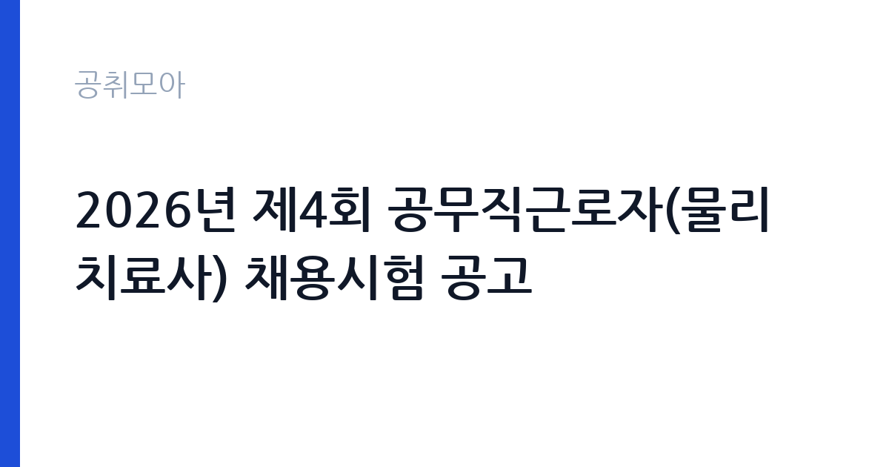

[국가기관] 2026년 제4회 공무직근로자(물리치료사) 채용시험 공고
보건복지부 국립재활원 · 서울 · 마감 2026-10-29 (D-7) · 출처 나라일터

한눈에 보는 모집 조건
| 기관 | 보건복지부 국립재활원 |
|---|---|
| 공고명 | 2026년 제4회 공무직근로자(물리치료사) 채용시험 공고 |
| 고용형태 | 공무직 |
| 근무지 | 서울 |
| 게시일 | 2026-10-22 |
| 마감일 | 2026-10-29 (D-7) |
지원자격, 이렇게 읽으세요
- 공무직(물리치료사) 1명
- 접수 ~2026-10-29 마감
- 세부 조건은 원문 공고문 확인
공무직 근로자는 공무원이 아니라 근로기준법이 적용되는 근로자이지만 기간의 정함이 없는 무기계약으로 채용되는 경우가 많아 정년까지 근무가 가능합니다. 채용은 공무원 시험과 달리 기관의 자체 전형으로 진행되고 인사 규정과 임금표를 적용받습니다. 이번 공고는 보건복지부 국립재활원에서 직접 진행하는 자체 전형으로, 응시자격과 제출서류는 공고문에 항목별로 제시됩니다. 해당 직종의 면허나 자격증이 필수입니다. 임상병리사는 임상병리사 면허를, 방사선사는 방사선사 면허를 요구하는 식입니다. 신규 면허 취득 예정자도 지원 가능한지 공고문에서 확인해야 하며, 졸업 예정자와 자격 취득 예정자의 지원 가능 여부가 다르게 규정되는 경우가 있습니다. 한시임기제나 기간제로 채용되면 근무 기간이 명확히 정해집니다. 결격사유와 건강 상태 확인 절차가 있습니다. 서류는 접수 마감 이후 보완이 되지 않으므로 자격 요건과 증빙 서류를 마감 전에 모두 갖춰야 합니다. 공고문에 명시된 우대 사항은 해당 여부를 확인해 증빙을 첨부해야 가점이 반영됩니다. 자격증은 유효 기간과 등록 상태를 확인해야 합니다. 갱신이 필요한 자격이라면 갱신 여부를 먼저 점검하십시오.
이 공고의 포인트
이 공고의 첫 번째 포인트는 고용 형태입니다. 무기계약으로 채용되면 정년까지 근무가 가능해 재계약 부담이 없습니다. 반대로 기간제로 채용되는 공고라면 계약 기간을 먼저 확인해야 합니다. 두 번째는 업무 범위가 명확하다는 점입니다. 보건의료 지원직 직무로 채용되므로 배치 이후 담당 업무가 크게 흔들리지 않습니다. 세 번째는 근무지입니다. 서울 지역 근무로 접근성은 좋지만 그만큼 지원자가 몰리는 지역이므로 경쟁률을 넉넉히 잡아야 합니다. 자격 요건이 까다롭지 않은 대신 지원자가 몰리는 유형의 공고입니다. 같은 직무 공고 중에서는 접수 마감이 가장 빨라 일정을 앞당겨 잡아야 합니다. 다만 선발 인원이 1명으로 많지 않아 자격을 갖춘 지원자가 몰리면 경쟁률이 높아질 수 있습니다.
전형은 어떻게 진행되나
서류전형과 면접전형 외에 직무수행능력 평가가 붙는 경우가 있습니다. 평가 방식은 공고문에 구체적으로 적혀 있으므로 어떤 항목에 배점이 높은지 먼저 파악하십시오. 면접에서는 지원 동기보다 실제 업무 경험에 대한 질문이 많고, 답변의 구체성이 평가를 가릅니다. 전형 일정은 서류 마감 이후 빠르게 진행되므로 연락 가능한 번호를 정확히 기재하고 문자와 메일을 수시로 확인해야 합니다. 최종 단계에서는 결격사유 조회와 신체검사가 진행됩니다. 제출서류 원본은 최종 단계에서 다시 요구되는 경우가 있어 사본과 함께 보관하십시오.
원문에서 확인한 전형 방식
국립재활원 2026년 제4회 공무직근로자 채용시험 공고 ○ 채용분야: 물리치료사 ○ 채용직급 및 인원: 공무직근로자 1명 ○ 선발방법: 제한경쟁채용(서류 및 면접) ○ 응시원서 접수기간: 2026. 10. 22.(목) ~ 2026. 10. 29.(목) ○ 담당부서: 보건복지부 국립재활원 총무과 비공무원 채용담당(02-901-1549) * 자세한 사항은 첨부파일 참고 바랍니다.
이런 분께 추천해요
- 해당 직종 면허를 보유한 분
- 검사 절차와 기록 관리에 정확성을 가진 분
- 개인정보 보호 규정을 엄격히 지킬 수 있는 분
지원 전 체크리스트
- 응시자격 요건과 경력 기준을 충족하는가 — 경력은 증명서로 입증해야 합니다
- 무기계약 여부와 정년 기준을 공고문에서 확인했는가
- 제출서류 목록을 모두 준비했는가 — 누락 시 서류 단계에서 탈락합니다
- 접수 마감 2026-10-29 이전에 접수 방식을 확인해 제출했는가
모집 일정과 제출 타이밍
공고 게시일은 2026-10-22, 접수 마감은 2026-10-29입니다. 준비 기간은 약 7일로 서류 준비와 자격 증빙을 함께 처리하기에는 넉넉하지 않은 편입니다. 첫 이틀 안에 공고문과 첨부 서식을 내려받아 요건을 확인하고 남은 기간에 증빙 서류를 발급받는 일정이 현실적입니다. 면접은 서류 합격자 발표 후 짧은 간격으로 진행되는 경우가 많으므로 서류 제출과 동시에 면접 준비를 시작하는 편이 안전합니다. 마감일에는 접수 시스템이 몰리므로 하루 전까지 제출을 마치는 것이 좋습니다. 서류 발표일과 면접일 사이가 짧은 경우가 많아 면접 준비는 접수와 동시에 시작하는 편이 좋습니다. 서울 근무지는 대중교통 접근성이 좋은 대신 주차와 통근 시간이 변수입니다. 출퇴근 경로를 미리 확인하십시오. 마감까지 일주일 안팎이 남아 서류 준비와 증빙 발급을 병행해야 합니다. 선발 인원이 한두 명 수준이라 지원자 개개인의 서류 완성도가 그대로 평가에 반영됩니다.
직무 이해하기: 국가기관
이 기관은 공공 서비스 제공을 목적으로 설립된 공공기관으로, 채용 공고에 따라 부서별 실무 인력을 선발합니다. 기관의 사업 범위와 조직 구성은 홈페이지에서 확인할 수 있으며 채용 절차는 자체 인사 규정을 따릅니다. 보건의료 지원직은 검사와 진료를 지원하는 실무를 맡습니다. 임상병리 업무는 검체를 채취·접수하고 장비로 분석한 뒤 결과를 검증하는 절차로 진행됩니다. 장비 정도 관리와 시약 재고 관리, 검사 결과 기록이 함께 따라붙습니다. 병무청이나 군 부대, 공공병원에서는 신체검사와 채용 신체검사 지원 업무 비중이 큽니다. 개인정보와 의료 정보를 다루므로 보안 규정 준수가 엄격합니다. 업무는 혼자 처리하기보다 부서 단위로 나눠 진행되므로 담당 구역과 협업 범위를 입사 초에 확인하는 것이 중요합니다. 직무 교육은 입사 후 기관 자체 계획에 따라 진행되므로 사전 경험이 없어도 시작할 수 있습니다.
자기소개서 작성 팁
보건의료 지원직 지원서는 정확성과 책임감을 증명하는 데 집중하십시오. 실습이나 근무 중 검사 오류를 발견해 바로잡은 경험, 장비 관리 기록을 유지한 경험이 효과적입니다. 환자와 직접 대면하는 업무라면 응대 경험도 함께 쓰십시오. 짧은 계약 기간이라도 업무 공백을 만들지 않겠다는 의지를 밝히면 좋습니다. 구성은 지원 동기, 직무 경험, 기여 방안 순서가 무난합니다. 지원 동기는 보건복지부 국립재활원의 사업 중 본인이 관심을 가진 부분을 한 가지로 좁혀 서술하고 추상적인 표현은 줄이십시오. 직무 경험은 담당했던 업무와 규모, 결과를 수치로 제시하면 설득력이 올라갑니다. 기여 방안은 입사 후 첫 3개월과 1년 계획으로 나눠 쓰면 준비도가 드러납니다.
면접 준비 포인트
면접에서는 검사 절차 이해와 정확성에 대한 태도를 봅니다. 검사 결과가 비정상으로 나왔을 때 어떻게 확인하는지, 장비 오작동 시 어떻게 대응하는지 묻습니다. 개인정보를 다루는 직무이므로 보안 의식을 언급하는 것이 좋습니다. 업무가 몰리는 시간대의 우선순위 판단도 자주 나오는 질문입니다. 답변은 상황, 판단, 조치의 순서로 정리하면 전달이 분명해집니다. 모르는 질문에는 모른다고 밝히고 확인 방법을 제시하는 편이 억지 답변보다 낫습니다. 마지막에는 근무 의사와 함께 2026-10-29 이후 일정에 언제든 응할 수 있다는 점을 전달하십시오. 지원 기관의 최근 사업이나 조직 개편 내용을 확인해 두면 지원 동기 질문에서 차이가 납니다.
급여·근무조건 읽는 법
보건의료 지원직의 보수는 임용 형태에 따라 달라집니다. 한시임기제공무원은 국가공무원 또는 지방공무원 보수규정상 연봉등급제를 적용받고, 임용 기간과 연봉등급이 공고문에 명시됩니다. 기간제 근로자라면 기관 임금표에 따라 월급이 정해지며, 교대·당직 수당이 붙는 경우가 있습니다. 2026년 최저임금은 시급 10,320원, 월 환산 2,156,880원입니다. 면허 수당과 특수 근무 수당 포함 여부를 원문에서 확인하십시오. 2026년 적용 최저임금은 시급 10,320원, 월 환산 2,156,880원(주 40시간·209시간 기준)입니다. 고용노동부 고시 제2025-47호로 확정된 금액입니다. 공고문에 금액이 제시되지 않은 항목은 원문 보수표나 처우 설명에서 확인해야 하며 확인되지 않은 수치는 쓰지 않는 것이 원칙입니다. 비교할 때는 월 급여뿐 아니라 상여·명절휴가비·복지포인트·초과근무수당까지 포함한 연간 총액으로 계산하십시오. 기간제라면 계약 기간 동안의 총액을, 무기계약이라면 호봉 상승과 정년까지의 누적 소득을 기준으로 판단하는 편이 정확합니다.
자주 묻는 질문
- 선발 인원은 몇 명인가요?
공고문 기준 1명입니다. 직종별로 인원이 나뉘는 경우가 있으니 모집분야 항목을 함께 확인하십시오. - 근무지는 어디인가요?
서울 지역의 보건복지부 국립재활원 소속 근무지입니다. 세부 주소와 출퇴근 조건은 원문 공고문에서 확인할 수 있습니다. - 보수는 얼마인가요?
채용 신분(공무직)과 기관 임금 규정에 따라 정해지며 구체적인 금액은 공고문 처우 항목에 제시됩니다. 금액이 공개되지 않은 경우에는 원문의 보수표를 확인하십시오.
함께 보면 좋은 공고
[국가기관] 서울경찰청 3기동단 공무직 무기직(시설관리)근로자 채용 공고 — 마감 2026-11-02[국가기관] 2026년 통일부 전산주사보(일반임기제) 경력경쟁채용 공고 — 마감 2026-11-02[국가기관] 2026년 하반기 공무직 및 기간제 근로자 채용 공고문 — 마감 2026-11-03출처: 나라일터 공개정보를 바탕으로 공취모아가 정리한 안내글입니다. 모집 조건·일정은 변경될 수 있으니 지원 전 반드시 원문 공고문을 확인하세요. 본 글은 정보 제공용이며 합격을 보장하지 않습니다.